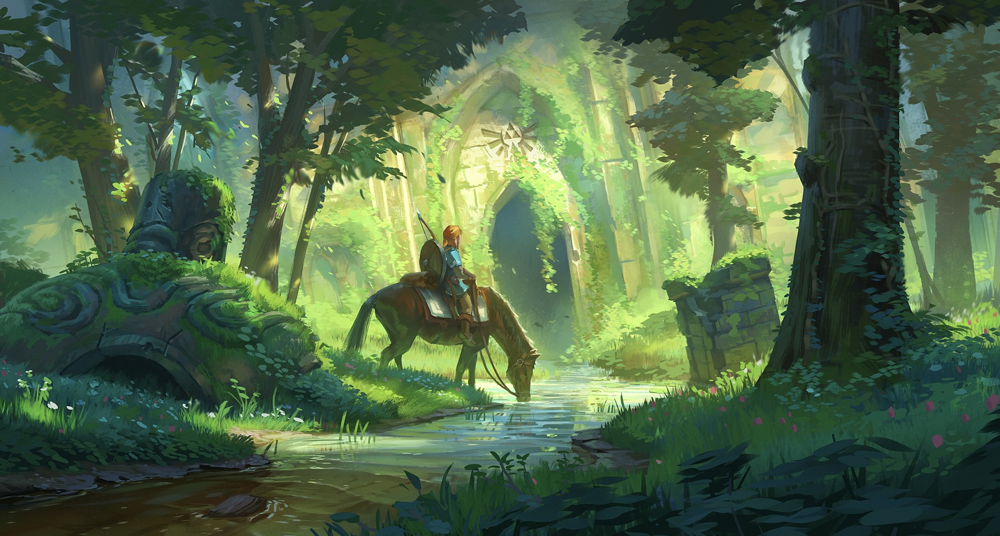

Legend of Zelda
A tale of a hero so bold
He travels the land, searching for treasure untold
Link is his name, an adventurer brave
His courage unmatched, his courage so great
Into dungeons and caves, he steps with care
To find the lost items and treasures so rare
With sword and shield, he fights all foes
The monsters and evil, he deftly overthrows
His quest to save Hyrule, he never gives up
With the Triforce in hand, he will never give in
The journey is long, the road is tough
But Link never stops, he's determined enough
He will save the princess, the kingdom, and more
With courage and strength, he'll always be sure
The legend of Zelda, a hero so bold
With courage and strength, his story is told
Great poem, and it basically showed the clear personalities of Link and the adventures or goals he accomplished or needed to be accomplished. All Zelda players would be grateful.

"Which came first, the chicken or the egg?" is a common question that has been asked for centuries. The answer is that the chicken came first because, according to the Bible, God created the animals before he created Adam and Eve. As the Bible states, “And God said, ‘Let the land produce living creatures according to their kinds: the livestock, the creatures that move along the ground, and the wild animals, each according to its kind.’ And it was so” (Genesis 1:24).
Great answer with acuurate quotes, however, it can be more detailed. Give more explanation for the answer.